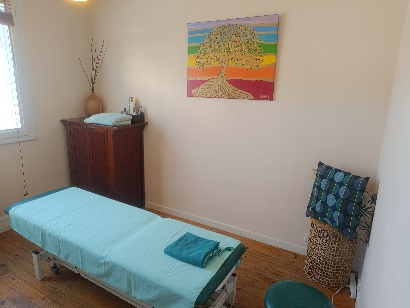
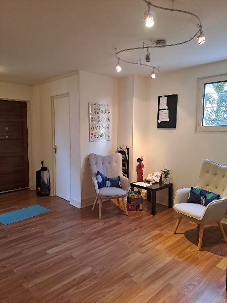
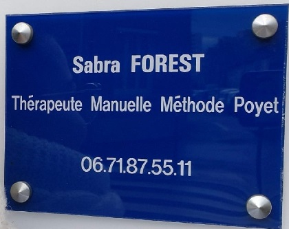

Cabinet Raclet Lyon 7
06.71.87.55.11 contact@desmainsquisoignent.fr
Des mains qui soignent, cabinet de thérapie manuelle, méthode Poyet, situé à Lyon 7. Praticienne : Sabra FOREST
Thérapie manuelle, Méthode Poyet :
- Douceur, globalité, précision et sécurité
- Inspiré de l’ostéopathie
- Méthode non manipulative
- Agit sur les os, les muscles, les organes…
- Retrouver sa mobilité et sa motilité
- Traiter les douleurs et orienter la guérison
- Adaptée à tous types de personnes
- Tous les âges
* Lien vers le site www.resalib.fr
Je pratique la méthode Poyet à Lyon.
Initialement Masseur-Kinésithérapeute DE, j'ai voulu approfondir mes connaissances pour traiter le corps en globalité.
Cette pratique thérapeutique manuelle associe douceur, globalité, précision et sécurité.
Elle s'adapte à tout type de besoin, patient et pathologie.
La méthode Poyet ne se substitue pas à une visite médicale et n'est pas compétente en situation d'urgence.

La méthode :
Crée par Maurice Poyet [1928-1996] (infirmier de guerre, kinésithérapeute, ostéopathe et formé en médecine traditionnelle chinoise)
C’est une pratique thérapeutique manuelle (Forme d’ostéopathie non manipulative) qui associe, douceur, globalité, précision et sécurité.
Elle permet d’agir sur différentes structures :
- os,
- muscles,
- organes...
et est adaptée à tous types de personnes peu importe l’âge, la condition physique ou la pathologie.
La thérapie manuelle repose sur la connaissance précise de l’anatomie et de la physiologie humaine et se base sur les principes fondateurs de l’ostéopathie.

La séance :
Une séance dure environ 1 heure et se pratique sur une table d’examen.
Le thérapeute examine en premier lieu le crâne puis le bassin.
Le sacrum est considéré comme le centre de commande et permet par la suite de traiter l’ensemble du corps.
Le soin se poursuit jusqu’au bout des doigts et des orteils en passant par les viscères au besoin.
Cela permet au corps de retrouver sa mobilité, sa motilité (mouvements propre de chaque structure du corps humain), de traiter les douleurs et d’orienter la guérison.

Le cabinet Raclet :
11 Avenue Jean-François Raclet 69007 Lyon
Google MapsAccès :
Métro ligne B : stations Jean-Jaurès et Debourg.
Tramway T1 et T6 : station Debourg.
Bus 64 : arrêt Jean-Vallier (Avenue Jean-François Raclet)
Voitures et vélos : places de parking disponibles proches du cabinet

Prendre rendez-vous *
* Lien vers le site www.resalib.fr
